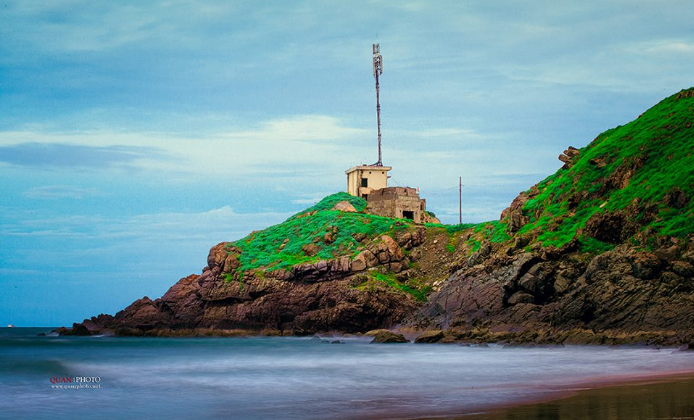

Cổng trời khiến giới trẻ ngất ngây tại Mũi Nghinh Phong Vũng Tàu
Trước mặt có biển sau lưng có núi , cảnh tượng ngọt lịm mà du khách có thể chiêm ngưỡng tại mũi Nghinh Phong Vũng Tàu – địa điểm mới không thể bỏ qua. Đến đây, ngoài việc ngắm nhìn khung cảnh nên thơ của thiên nhiên, du khách còn có thể ngắm nhìn chiếc Cổng trời, cắm trại qua đêm và tận hưởng nhiều điều thú vị khác.
Địa Chỉ: 1 Hạ Long, Phường 2, Thành phố Vũng Tầu, Bà Rịa - Vũng Tàu Giờ Mở Cửa: Cả ngàyMũi Nghinh Phong Vũng Tàu (ảnh ST)
1. Mũi Nghinh Phong Vũng Tàu – địa điểm không thể bỏ qua
-
Đường đi đến mũi Nghinh Phong cũng rất đơn giản. Các bạn đến tượng Chúa giang tay.
Ở phía đối diện xéo tượng có một quán cà phê bị bỏ hoang, đi vào đường đó là nhìn
thấy bậc thang để xuống biển.

Mũi Nghinh Phong (ảnh sưu tầm)
-
Con đường dẫn ra mũi Nghinh Phong chỉ có duy nhất một chiếc cầu, còn lại toàn nắng và gió.
Tuy nhiên, cây cầu độc đáo này lại là địa điểm check-in tuyệt vời với biển Hương Phong ở phía sau.
(ảnh sưu tầm)
-
Đây chính là một mũi đất vươn dài ra bán đảo Vũng Tàu. Mũi Nghinh Phong có khí hậu mát mẻ,
gió thổi bốn mùa, chính vì vậy mà nó trở thành địa điểm cắm trại ở Vũng Tàu rất hút các bạn trẻ.
Nước ở bãi Vọng Nguyệt rất sạch và trong, bờ biển cũng ít thoải, sâu hơn các bãi khác. Chẳng cần
ồn ào như Bãi Trước, chẳng dữ dội như Bãi Sau, bãi tắm ở đây vẫn đủ để đi vào trái tim của người
dân bởi sự nên thơ, kỳ bí.
Nhìn tượng Chúa giang tay từ góc khác (ảnh sưu tầm)
Nếu như bạn đã quá quen với việc leo lên tượng Chúa để ngắm mũi Nginh Phong Vũng Tàu từ trên cao, thì giờ hãy thử làm ngược lại. Đến đây để nghìn ngược lại khung cảnh non núi ở đất liền. Cảm giác lạ lẫm, thích thú mà khó tả vô cùng.
2. Cổng trời Vũng Tàu – địa điểm check-in mới “toe”
-
Điểm đặc biệt nhất tại đây chính là chiếc cổng trời. Chỉ cần bước qua chiếc cổng này,
bạn sẽ nhìn thấy một thế giới khác. Trước mắt bạn sẽ là biển cả bao la,
từ đây có thể bao trọn cả thành phố biển trong tầm mắt.
Cổng trời (ảnh sưu tầm)
-
Cổng trời chính là cái tên được du khách đặt cho nơi này.
Thời gian gần đây, cổng trời Vũng Tàu đã trở thành địa điểm sống ảo cực hot.
Có thể bạn đã đến Vũng Tàu cả chục lần rồi, nhưng không phải ai cũng biết đến địa điểm bí mật này.
Biển cả mênh mông trước mặt (ảnh sưu tầm)
-
Chẳng những vậy, từ cổng trời Vũng Tàu, du khách còn được ngắm nhìn khung cảnh nên thơ
của thiên nhiên. Bạn có thể đi xuống bãi Vọng Nguyệt để đón những cơn gió biển khơi.
Hoặc cũng có thể cùng bạn bè nướng hải sản rồi thưởng thức ngay trên bờ biển.

Sóng biển khá mạnh và xoáy (ảnh sưu tầm)
Khung cảnh ở đây đẹp đến mê hồn nhưng sóng lại rất lớn và xoáy. Vì vậy các bạn chỉ nên đến đây hóng gió chứ đừng tắm nhé!!!
3. Đây còn là địa điểm cắm trại ở Vũng Tàu cực thích nữa
-
Gần đây Mũi Nghinh Phong Vũng Tàu và cổng trời Vũng Tàu đang dần trở nên phổ biến.
Nằm cách Sài Gòn chỉ 100km, nơi này rất thích hợp cho các chuyến cắm trại qua đêm.

Đốt lửa trại (ảnh sưu tầm)
-
Vị trí cắm trại cũng khá hẹp, chỉ đủ để dựng 7-9 lều ở các góc khác nhau. Khi cắm trại,
các bạn nên cố định lều thật chặt để đề phòng gió lớn. Ngoài ra, trước khi lên đường việc
theo dõi thời tiết để tránh rủi ro là điều bắt buộc.
Cổng trời Vũng Tàu là địa điểm cắm trại cực đẹp (ảnh sưu tầm)
-
Cắm trại qua đêm ở Vũng Tàu, các bạn sẽ được đón những tia nắng đầu tiên cùng cơn gió mát
của ngày mới. Cảm giác thư thái mà yên bình vô cùng.
Đi cùng các chiến hữu (ảnh sưu tầm)
Phía sau lưng của mũi Nghinh phong là núi, phía trước là biển, nơi này quá hợp cho các chuyến căm trại để hòa mình vào thiên nhiên. Thỉnh thoảng các bạn còn nhìn thấy các đôi ghé qua để chụp ảnh cưới nữa.
Tin liên quan: Tượng Chúa Kitô Vua(Tượng Chúa Kitô trên đỉnh Núi Tao Phùng)
Tìm kiếm Tour